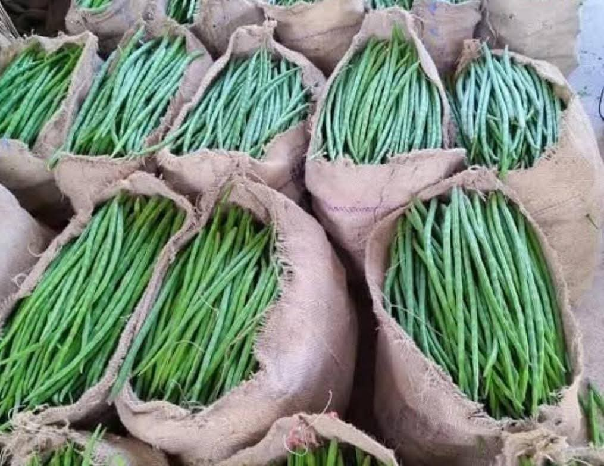

DrumstickDirect is a trusted bulk drumstick supplier in India supplying fresh moringa pods directly from our farm in Karnataka. We serve wholesalers, supermarkets, hotels, restaurants and exporters with reliable supply and consistent quality.
We supply fresh drumsticks in bulk quantities to buyers across India. Our farm-direct approach ensures freshness, quality and competitive pricing without unnecessary middlemen.
Whether you are a wholesaler, retailer, supermarket chain or food distributor, DrumstickDirect can provide fresh drumsticks in commercial quantities with dependable service.
Located in Gauribidanur, Karnataka, our farm produces premium quality moringa pods suitable for domestic and export markets. Our supply capacity can reach up to 4 tons per day depending on season and availability.
DrumstickDirect
Gauribidanur, Karnataka, India
📞 WhatsApp: +91 83104 57215
🌐 Website:
www.drumstickdirect.in